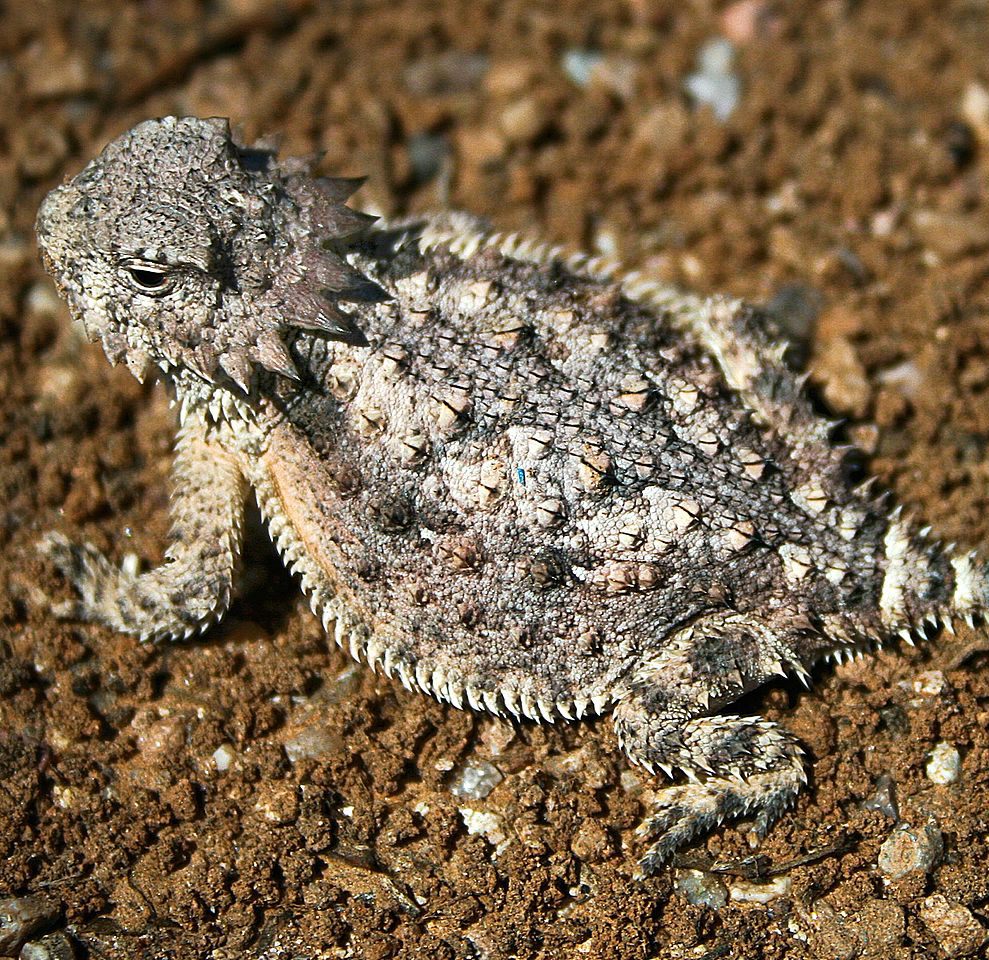

Marine Iguana
The marine iguana (Amblyrhynchus cristatus) is an iguana found only on the Galápagos Islands that has the ability, unique among modern lizards, to forage in the sea, making it a marine reptile. The iguana can dive over 9 m (30 ft) into the water. It has spread to all the islands in the archipelago, and is sometimes called the Galápagos marine iguana. It mainly lives on the rocky Galápagos shore to warm from the comparably cold water, but can also be spotted in marshes and mangrove beaches.

Green Anole
Due to their ability to change color, anolis (anole) lizards are frequently referred to as American chameleons. Also, because they can run up walls, they are sometimes confused with geckos. They are not closely related to either of those groups and, in fact, are more closely related to iguanas.
Blue-tongued Skink
Blue-tongued skinks comprise the Australasian genus Tiliqua, which contains some of the largest members of the skink family (Scincidae). They are commonly called blue-tongued lizards or simply blue-tongues in Australia. As suggested by these common names, a prominent characteristic of the genus is a large blue tongue that can be bared as a bluff-warning to potential enemies. Blue-tongued skinks are also bred in captivity and sold as house pets.

Horned Lizard
Horned lizards are a genus (Phrynosoma) of lizards which are the type genus of the family Phrynosomatidae. The horned lizard is popularly called a "horned toad", "horny toad" or "horned frog", yet it is neither a toad nor a frog. The popular names come from the lizard's rounded body and blunt snout, which make it resemble a toad or frog (Phrynosoma literally means "toad-bodied"). The spines on its back and sides are made from modified scales, whereas the horns on the heads are true horns (i.e. they have a bony core). Of 15 species of horned lizards in North America, eight are native to the United States.
Basalisk Lizard
Basiliscus is a genus of large corytophanid lizards, commonly known as basilisks, which are endemic to southern Mexico, Central America, and northern South America. They are commonly known as the Jesus Christ Lizard, or simply the Jesus Lizard, due to their ability to run across water for significant distances before sinking.
Bearded Dragon
Pogona is a genus of reptiles containing eight lizard species, which are often known by the common name bearded dragons. The name "bearded dragon" refers to the "beard" of the lizard, the underside of the throat which turns black if they are stressed or see a potential rival. They are adept climbers, spending time on branches and in bushes and near human habitation. Pogona species bask on rocks and exposed branches in the mornings and afternoons. They are found throughout much of Australia in a wide range of habitats such as deserts, shrublands and Eucalyptus woodlands.